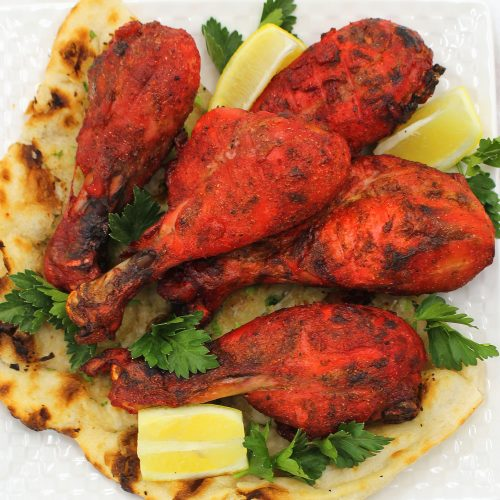

Tandoori Chicken

Description
Tandoori chicken is a South Asian dish of chicken
marinated in yogurt and spices and roasted in a tandoor,
a cylindrical clay oven.
Tandoori chicken can be eaten as a starter or appetizer,
or as a main course, often served with naan flatbread.
It is also used as the base of numerous cream-based curries,
such as butter chicken.
Ingredients
- 2 pounds chicken, cut into pieces
- 1 medium lemon, juiced
- 1 teaspoon salt
- 1 cup plain yougurt
- 1/2 medium onion, finely chopped
- 1 clove garlic, minced
- 2 teaspoons garam masala
- 1 teaspoon grated fresh ginger root
- 1 teaspoon cayenne pepper
- 1 teaspoon red food coloring (optional)
- 1 teaspoon yellow food coloring (optional)
- 2 teaspoons finely chopped cilantro
- 1 medium lemon, cut into wedges
Steps
-
Remove and discard skin from chicken pieces. Cut slits into meat and place into a shallow dish.
Season chicken on both sides with lemon juice and salt. Let sit for 20 minutes.
-
Mix yogurt, onion, garlic, garam masala, ginger, and cayenne pepper together in a medium bowl until smooth, then stir in food coloring.
Spread yogurt mixture over chicken, cover, and refrigerate for 6 to 24 hours (the longer the better).
-
When ready to cook, preheat an outdoor grill for medium-high heat and lightly oil the grate.
Remove chicken from marinade. Discard remaining marinade.
-
Cook chicken on the preheated grill until no longer pink and the juices run clear.
An instant-read thermometer inserted near the bone should read 165 degrees F (74 degrees C). Garnish with cilantro and lemon wedges.